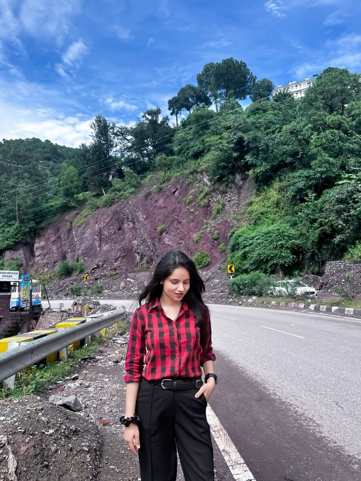

Chandrika

Summary
In pursuit of further career prospects and to widen the horizon of my experience. Everyday teaches something new,
with this thought I want to work in a challenging environment. I believe in problem solving as having problems
in an organisation is a common thing but what matters is how we solve it in less and effective Time. Working in
an organisation where I can utilise my past experience and learn for the future which would be a great honour
for me.
Education
-
2010, 10th
HPBoSE
73%
-
2013,Diploma
HPTU
72%
-
2016, B.Tech
HPTU
74%
-
2021, M.Tech
HPTU
72%
Work Experience
Software Engineer (Node JS Developer): PREPLADDER
14th Dec 2020 to (Present)
- Collaborating with front-end developers on the integration of elements.
- Worked on AWS
- Knowledge of JavaScript and Node.js
- Worked with RESTful API’s
- Worked on YouTube APIs, RazorPay APIs
- Implementation of security and data protection
- Basic understanding of front-end technologies, such as HTML, and CSS. Other responsibilities as assigned.
Assistant Professor: ARYANS GROUP OF COLLEGES
25th March 2019 to 25th Oct 2019
- Handled website (PHP, CSS and JS)
- Facebook campaigns for marketing
- Planning and preparing lessons
- Encouraging student participation
- Marking student work and recording performance Administrative tasks
Teaching Faculty: EGC INSTITUTE SOLAN (HIMACHAL PRADESH)
3rd Nov 2016 to 25th Aug 2017
- Responsible for Completion of Course.
- Handling Management for Students.
- Create and distribute educational content (notes, summaries, assignments) Collaborate with other teachers, parents and stakeholders and participate in regular meetings
- To prepare and maintain course files
Skills
- Node JS, React JS, C/C++, .NET, CoreJava/Advance Java, PHP, HTML/CSS/JavaScript, Knowledge of Python
- MYSQL, MS- Access, Oracle
- Mac, Window (All Versions), Linux
- VS Code, NetBeans, Eclipse
Awards and Certifications
- Gold medalist in Himachal Pradesh Technical University of batch 2016. • Diploma with first Division.
- Degree with first Division.
- M.Tech with First Division
Others